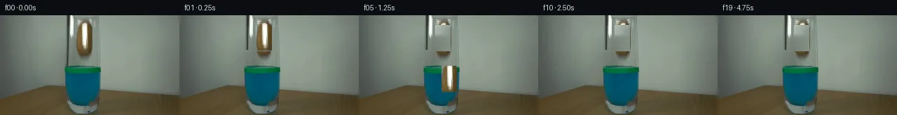

![首帧]()

Round 00
2026-11-06T06:10:34.597376+00:00像素候选变化代码 +345/−0inspection 更新
pixels 2badbf75124cbb5c · code 350e3f36c0d2e202
查看本轮 generate.py 真实 diff
--- previous/generate.py
+++ current/generate.py
@@ -0,0 +1,345 @@
+"""PixelWorld-Text generation: grabber releases potato into glass with blue liquid."""
+import numpy as np
+from PIL import Image
+from pathlib import Path
+import sys
+
+sys.path.insert(0, str(Path(__file__).parent))
+from artifact_io import save
+
+CASE_DIR = Path(__file__).parent
+TMP = CASE_DIR / ".tmp"
+TMP.mkdir(exist_ok=True)
+
+# ---------------------------------------------------------------------------
+# 1. Load first frame
+# ---------------------------------------------------------------------------
+first = np.array(Image.open(CASE_DIR / "first_frame.png")) # (144, 256, 3) uint8
+H, W = 144, 256
+
+# ---------------------------------------------------------------------------
+# 2. Extract potato sprite and build clean background
+# ---------------------------------------------------------------------------
+# Potato region (from observation): y=12-53, x=107-132 in image coords
+PY0, PY1 = 12, 54 # potato y range
+PX0, PX1 = 107, 133 # potato x range
+PH = PY1 - PY0
+PW = PX1 - PX0
+
+# Copy the potato region
+potato_region = first[PY0:PY1, PX0:PX1].copy()
+
+# Build potato mask via background differencing
+# Sample background from left and right of potato
+bg_left = first[PY0:PY1, PX0 - 20:PX0] # left samples
+bg_right = first[PY0:PY1, PX1:PX1 + 18] # right samples (avoid glass edge)
+
+potato_mask = np.zeros((PH, PW), dtype=bool)
+for y in range(PH):
+ for x in range(PW):
+ r, g, b = potato_region[y, x]
+ yb = min(y, bg_left.shape[0] - 1)
+ # Estimate background per-channel by interpolating between left and right
+ lr = bg_left[yb, -4:, 0].mean()
+ lg = bg_left[yb, -4:, 1].mean()
+ lb = bg_left[yb, -4:, 2].mean()
+ rr = bg_right[yb, :4, 0].mean()
+ rg = bg_right[yb, :4, 1].mean()
+ rb = bg_right[yb, :4, 2].mean()
+ t = x / max(PW - 1, 1)
+ er = lr * (1 - t) + rr * t
+ eg = lg * (1 - t) + rg * t
+ eb = lb * (1 - t) + rb * t
+ dist = abs(float(r) - er) + abs(float(g) - eg) + abs(float(b) - eb)
+ if dist > 35:
+ potato_mask[y, x] = True
+
+# Morphological cleanup
+from scipy.ndimage import binary_closing, binary_opening, binary_fill_holes
+potato_mask = binary_closing(potato_mask, structure=np.ones((3, 3)), iterations=2)
+potato_mask = binary_opening(potato_mask, structure=np.ones((3, 3)), iterations=1)
+potato_mask = binary_fill_holes(potato_mask)
+
+# Get tight bounding box
+rows = np.any(potato_mask, axis=1)
+cols = np.any(potato_mask, axis=0)
+p_ymin, p_ymax = np.where(rows)[0][[0, -1]]
+p_xmin, p_xmax = np.where(cols)[0][[0, -1]]
+print(f"Potato sprite bbox: y={p_ymin}-{p_ymax}, x={p_xmin}-{p_xmax} (in region)")
+print(f"Potato sprite bbox in image: y={p_ymin + PY0}-{p_ymax + PY0}, x={p_xmin + PX0}-{p_xmax + PX0}")
+
+# Crop to tight bbox
+potato_sprite = potato_region[p_ymin:p_ymax + 1, p_xmin:p_xmax + 1].copy()
+potato_sprite_mask = potato_mask[p_ymin:p_ymax + 1, p_xmin:p_xmax + 1]
+sprite_h, sprite_w = potato_sprite.shape[:2]
+print(f"Potato sprite size: {sprite_w}x{sprite_h}")
+
+# ---------------------------------------------------------------------------
+# 3. Build clean background (inpaint potato and grabber areas)
+# ---------------------------------------------------------------------------
+clean_bg = first.copy()
+
+# Inpaint potato region: use background interpolation
+for y in range(PY0, PY1):
+ for x in range(PX0, PX1):
+ py = y - PY0
+ px = x - PX0
+ if potato_mask[py, px]:
… diff truncated; 258 more lines …